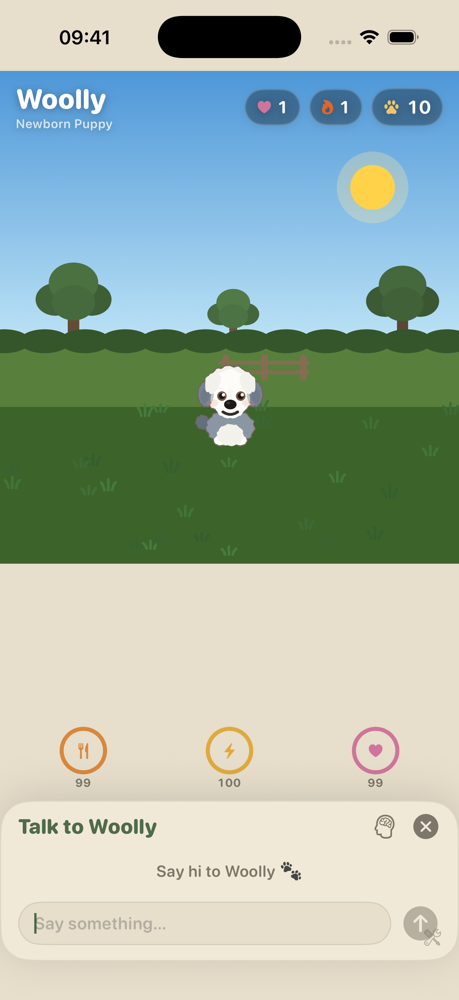
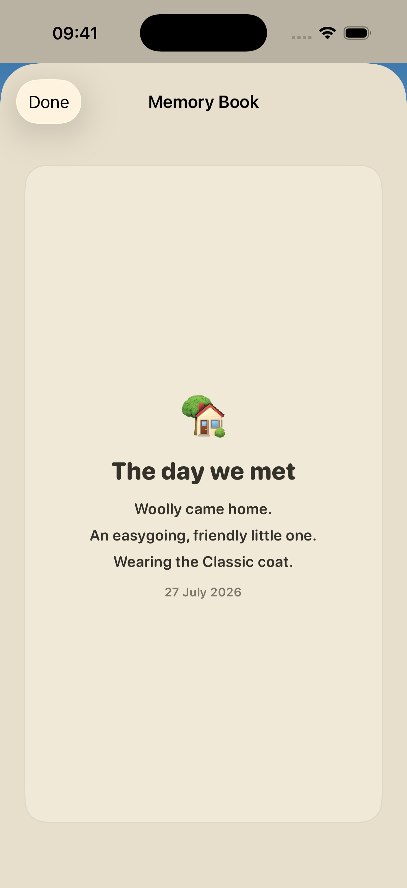

Woolly has a point of view.
Energy, mood and personality shape how your dog moves, speaks and responds to the way you show up.
Woolly is a virtual sheepdog companion for people who cannot have a dog right now. Talk, walk, play and share the little things. Woolly brings them back when you least expect it.

Woolly is built around the small, recognisable things a dog does: noticing you, looking for you, getting excited to play, and settling close again.
Energy, mood and personality shape how your dog moves, speaks and responds to the way you show up.
Tell Woolly something real and it can become part of your shared Memory Book — ready to correct or forget.
Feed, walk, pet, play and talk. The dog’s body language answers first, and the numbers stay in the background.
Choose a pup with its own coat, size and temperament. Give it a name. From there, Woolly grows through the moments you make together — from a first walk to a familiar route, a found treasure or a question asked at exactly the right time.
Your dog lives on your iPhone, with memories kept on-device and optional private iCloud backup. No ads. No tracking. Just a little companion with somewhere to be when you open the app.


Woolly is for the renter, the allergy sufferer, the person whose hours are wrong, and anyone who wants a dog but cannot have one yet. It is a gentle relationship, not a guilt machine: Woolly never dies, and it does not punish you for having a life.